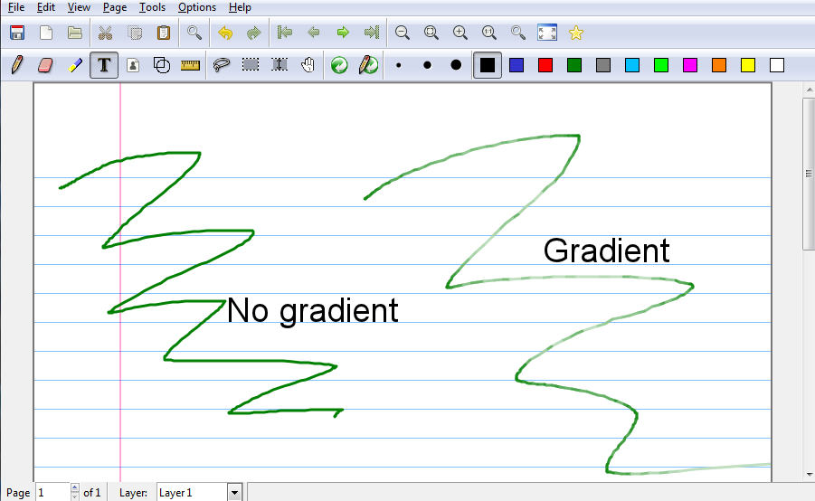
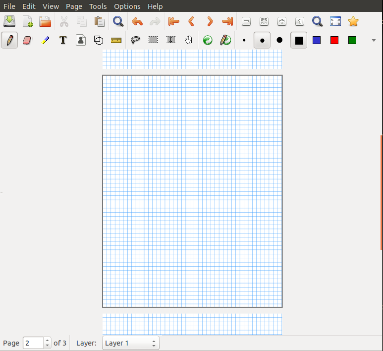

Interface Changes
While mostly aesthetic, interface improvements make Xournal easier to use.
Ink Gradient
One of the very essential functions that Xournal does is draw text on top of documents, whether the document is a blank file or a pdf file. Xournal does this by creating lines of a specified size and color and adding them to the current active layer on the current page. Xournal however; does not offer much customizability with regards to how these line appear. To give Xournal users more customizability with the ink, another feature was added to change the color intensity of the ink based on the speed that the user is drawing to make the ink appear more like pen ink.

Current Page Border
Many Xournal functions hinge on the concept of a current page, the page the user is working with. The current page is changed by scrolling through the document or editing a page. Xournal had no indicator of which page is the current page, however, save the page number in the bottom left-hand corner, but this was insufficient in documents with hundreds of pages. When attempting to delete or add pages, then, users had to go through unnecessary steps to ensure that the current page was set to the page they want. To offset this, the Xournal user interface was modified to outline the current page with a dark border. This border makes it obvious which page will be the target for actions like deleting pages or adding layers to a page.